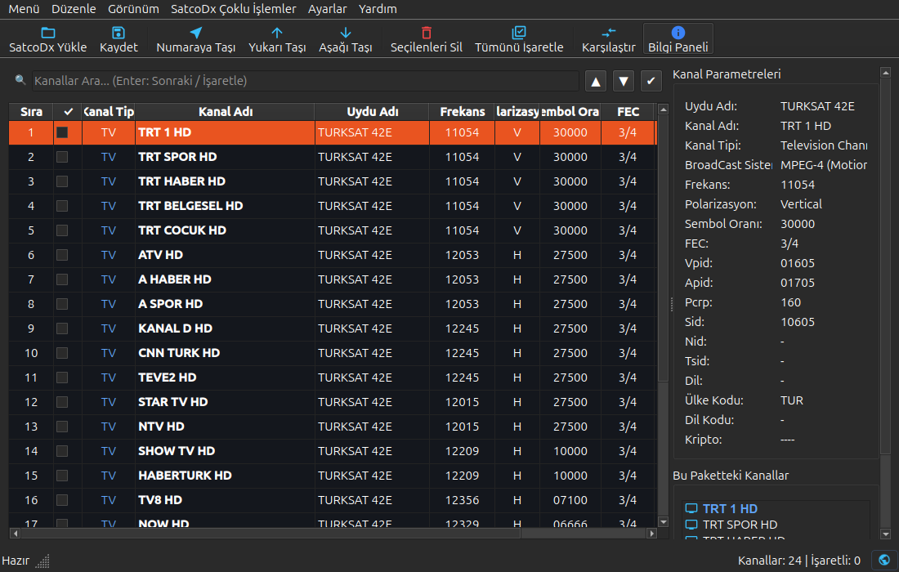

Vestel, Toshiba, Regal ve tüm SatcoDX (.sdx) formatını kullanan Smart TV ve uydu alıcıları için geliştirilmiş; hızlı, modern ve emniyetli masaüstü kanal editörü.

Televizyon kumandasıyla saatler süren kanal sıralama zahmetini ortadan kaldıran profesyonel araç seti.
Kanalları fareyle sürükleyip bırakarak veya Alt+Yukarı/Aşağı kısayollarıyla mevcut sırayı bozmadan araya ekleyin ve diğer kanalları otomatik kaydırın.
Yüzlerce kanal arasında kaybolmadan, hedef numarayı yazarak seçili kanalı doğrudan istediğiniz sıra numarasına anında taşıyın.
Eski veya favori listenizi referans gösterin; televizyonunuzdan yeni taranmış yüzlerce kanalı tek tıkla eski favori sıralamanıza geri getirin.
Radyoları otomatik listenin sonuna gönderin, şifreli kanalları tek hamlede ayıklayın, mükerrer/çift kanalları temizleyin ve kanal isimlerini standartlaştırın.
Listenizi Excel uyumlu CSV, yazdırılabilir TXT veya VLC Player & TVheadend için DVB-S URI parametreli M3U oynatma listesi olarak kaydedin.
İki farklı .sdx dosyasını yan yana açarak eklenen yeni kanalları, silinenleri veya frekansı değişen yayınları renkli fark analiziyle tespit edin.
Tüm popüler Smart TV üreticileri ve uydu alıcılarında fiziksel olarak test edilmiş ve bayt uyumluluğu onaylanmıştır.
Vestel ve OEM üretimi anakartları kullanan televizyonlar başta olmak üzere SatcoDX formatını destekleyen tüm sistemler:
Dosyayı her kaydettiğinizde otomatik .bak yedeği oluşturularak veri kaybı önlenir.
SatcoDX 105 bayt yapısı ve CRC denetimleri korunur; televizyonunuz dosyayı sorunsuz tanır.
Binlerce kanallı listeleri anında yükler ve bellek şişmesi yapmadan akıcı bir deneyim sunar.
Kendi .sdx dosyanızı sürükleyip bırakın veya örnek listeyle SatSort'un kanal ayrıştırma hızını doğrudan webde test edin.
.sdx dosyanızı buraya sürükleyinveya dosya seçmek için tıklayın (Dosyanız sunucuya yüklenmez; tamamen tarayıcınızın belleğinde güvenle ve anında çözümlenir)
Size en uygun kurulum yöntemini seçin. APT deposu ile otomatik güncellemeleri alabilir veya AppImage ile kurulumsuz çalıştırabilirsiniz.
Resmi GitHub Pages APT deposunu sistem kaynaklarınıza ekleyerek SatSort'u tek komutla kurabilir ve sistem güncellemeleriyle birlikte otomatik yeni sürümleri alabilirsiniz:
# 1. SatSort resmi APT deposunu ekleyin
echo "deb [arch=amd64 trusted=yes] https://gokcank.github.io/SatSort stable main" | sudo tee /etc/apt/sources.list.d/satsort.list
# 2. Paket listesini güncelleyin ve kurun
sudo apt update && sudo apt install satsortSisteme herhangi bir paket kurmadan, doğrudan çift tıklayarak veya terminalden tek komutla çalıştırmak isterseniz Evrensel Linux AppImage paketini indirebilirsiniz:
# En son AppImage paketini indirin
wget https://github.com/gokcank/SatSort/releases/latest/download/SatSort-1.1.0-x86_64.AppImage
# Çalıştırma izni verip başlatın
chmod +x SatSort-1.1.0-x86_64.AppImage
./SatSort-1.1.0-x86_64.AppImageDepo eklemeden yalnızca en güncel Debian/Ubuntu (.deb) paket dosyasını manuel olarak indirip kurmak isterseniz:
# .deb paketini indirin
wget https://github.com/gokcank/SatSort/releases/latest/download/satsort_1.1.0_amd64.deb
# dpkg veya apt ile kurun
sudo apt install ./satsort_1.1.0_amd64.debGeliştiriciler ve kaynak koddan çalıştırmak isteyenler için Python 3 ve PySide6 (Qt6) ile çalıştırma:
# Depoyu klonlayın
git clone https://github.com/gokcank/SatSort.git
cd SatSort
# Bağımlılıkları yükleyin ve başlatın
pip install -r requirements.txt
python3 main.py